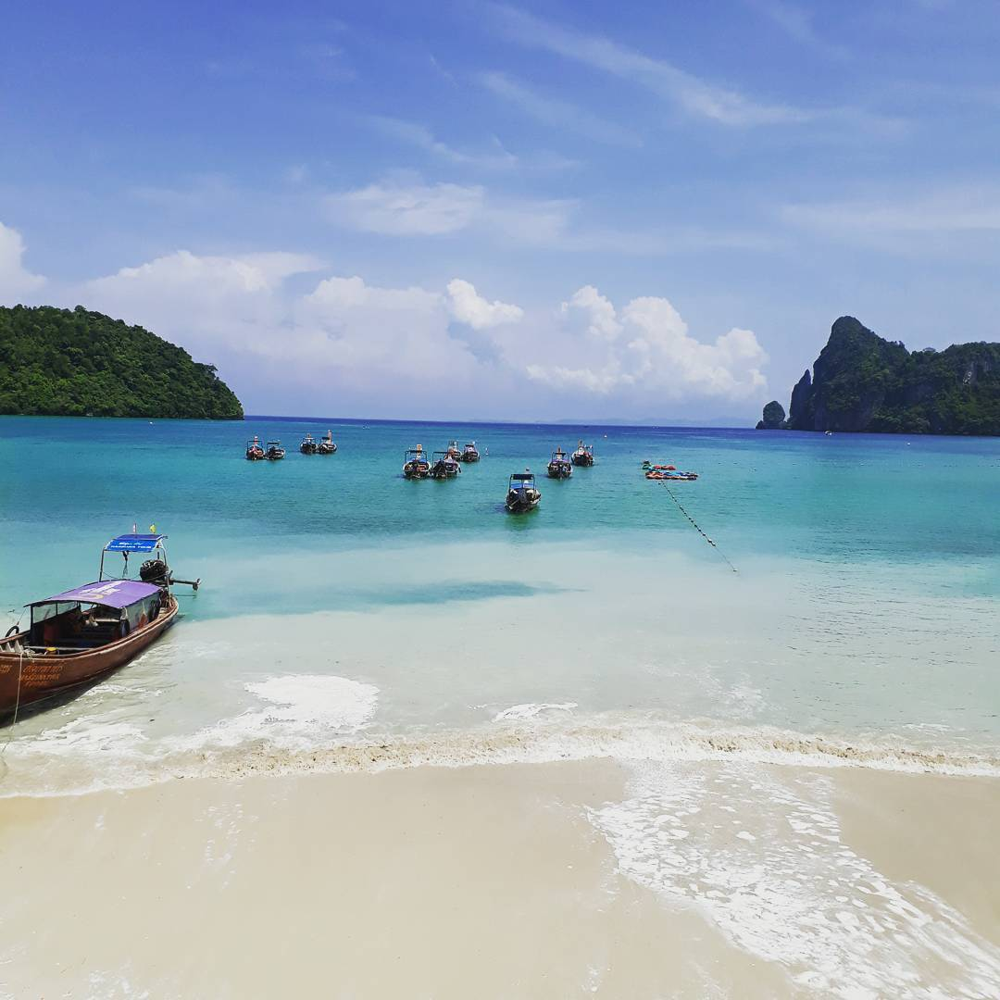

¿Cómo describir Phi Phi? Antes de emprender el viaje con Tomás y Kevin buscamos mucha información sobre este destino y las palabras que con más frecuencia aparecen son: "Paraíso", "Leonardo Di Caprio", "Fiesta", "Descontrol" y la verdad que ninguna de esas palabras esta errada. Phi Phi es un archipiélago que se encuentra en el mar de Andamán y pertenece a Tailandia. El mismo, cuenta con 4 islas (Phi Phi Don, Phi Phi Leh, Mosquito y Bambú). ¿Por qué paraíso? Porque sin lugar a dudas sus playas de arenas blancas y sus aguas con tonalidades de verde muy cristalino hacen a este destino un lugar de ensueño, no es casualidad que la película "La Playa", protagonizada por Leonardo Di Caprio, se haya rodado en "Maya bay" perteneciente a Phi Phi Leh.
La particularidad de este archipiélago es que de día es un paraíso increíble donde se puede practicar mil y una actividades al aire libre, pero de noche, las mismas playas de arena blanca se transforman en una fiesta infernal donde jóvenes de todas partes del mundo se juntan a escuchar música, admirar los shows de fuegos que propician los bares y a pasar unos buenos momentos acompañadas de unas Chang (Cerveza Tailandesa). Eso si, el que quiera ir esté preparados para los excesos, para el alcohol en demasía y hasta para ver sexo en distintos rincones de esta isla.
. Vista desde el Slinky Hostel en Loh Da Lum Bay, Phi Phi Don, Tailandia.
Hay muchas formas de llegar Phi Phi, pero nosotros decidimos ir desde Bangkok a Phuket en un avión muy económico, pasar unos días ahí, y luego ir en ferry a Phi Phi Don. Reservamos y pagamos el transporte desde la web de PhuketFerry donde encontramos el precio más bajo después de compararlo con otras webs. Estén atentos cuando van a realizar la compra ya que existen muchos horarios y diversas alternativas que conectan distintos puertos de Phi Phi y de Phuket, y obviamente, el precio cambia según lo que elijamos. Hay pasajes con hasta 50% de descuento.
Al llegar a la isla tienen que optar entre hospedarse en los hostels de la playa Loh Da Lum Bay, donde se encuentra la fiesta, o en lugares más alejados donde las noches son tranquilas. Vale aclarar, que la fiesta en Phi Phi arranca temprano y termina a las 3:00hs, a partir de esa hora ya podrán dormir tranquilos, pero antes, es complicado y los hoteles advierten que no recibirán quejas por ruidos molestos.
Nosotros nos hospedamos en el Slinky Hostel de Loh Da Lum Bay, en pleno centro de fiesta. El hostel cuenta con dos habitaciones enormes donde en cada una duermen casi 20 personas. Todo una aventura divertida compartir habitación con tantas personas, pero una aventura que no es para vivirla más de unos días. El hotel es aceptable, camas cómodas, pero sin desayuno y con baños poco higiénicos. Es el costo de estar en el paraíso y en el infierno al mismo tiempo, rodeado de muchísimos jóvenes que quieren divertirse.
En Loh Da Lum Bay es absolutamente toda la playa una fiesta, a partir de las 20:00hs comienza la música y los shows de fuegos, las personas cenan y comienzan a beber. Lo que se suele hacer es ir bordeando toda la costa e ir de bar en bar a lo largo de la noche, cambiando de danzas, estilos musicales y bebidas. Se puede escuchar desde reaggae, música electrónica (predominante) hasta ritmos latinos como cumbia y reaggaeton.
Si hay algo que sobra en esta isla son ofertas de paseos, vas andando por la playa y te quieren vender hasta un paseo por tu hotel. Lo principal que tienen que saber para ahorrar y disfrutar al máximo de los paseos, es que lo más barato es reservar un bote por unas horas entre varias personas. ¿Cómo se hace? Hablan con personas de su hostel y arreglar para ir todos juntos de excursión, entonces van a los botes que se encuentran en toda la isla (enfrente de el Slinky hay uno por ejemplo) y arreglan el monto con la persona encargada. Nosotros eramos 3 y acordamos un paseo de 6 horas pagando 600 bahts cada uno, es decir, 19 dólares.
La oferta de lugares para conocer es enorme y si bien todos son muy bonitos, les recomiendo 3 imperdibles que pueden incluir en el paseo de barco:
Maya Bay, Phi Phi Leh, Tailandia.
Nui Beach, archipiélago de Phi Phi, Tailandia.
Monkey Beach, archipiélago de Phi Phi, Tailandia.
El costo de las altas expectativas puede ser la decepción. Lo cierto es que fuimos con muchas expectativas, en mi caso de encontrar el paraíso que vi en la película "La Playa", en el caso de Kevin de tener las mejores noches de fiesta y en el caso de Tomás, bueno, nunca sabemos cuales son sus expectativas. Lo cierto, que el lugar es hermoso pero con tantas altas expectativas que tenía, me decepcionó un poco. Sin lugar a dudas, encontré playas más paradisíacas, por ejemplo, en Maldivas.
Ahora, si lo que ustedes buscan es un mix entre unas playas increíbles y la mejor fiesta de sus vidas, llegaron al lugar correcto, bienvenido a Phi Phi Don.